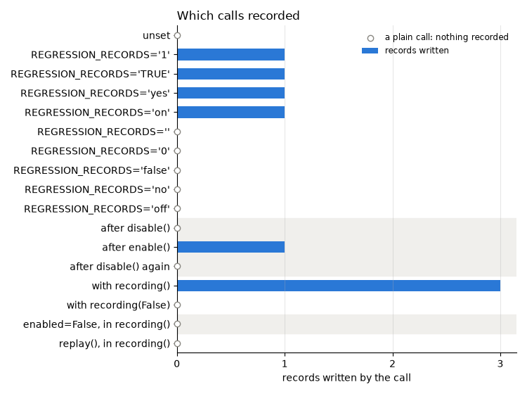

Note
Go to the end to download the full example code.
REGRESSION_RECORDS : switching recording on and off¶
A decorated function records only while recording is switched on. Otherwise its wrapper is a pass-through that costs one check per call, so the decorator can stay on production code.
The switch is the environment variable REGRESSION_RECORDS, read afresh on every
call. enable(), disable() and with recording(): set it from Python. This
page tries each, then shows the two things that override it: enabled=False on a
decorator, and a running replay.
The switch is process-wide, and the other pages run in this same process when the docs are built, so every section below puts it back the way it found it.
Setup: where records go¶
The code under test reads its store from the REGRESSION_RECORDS_STORE environment
variable when it is imported, so the variable is set first
(record_func : recording a first call says why).
import os
import tempfile
from pathlib import Path
# In a project: REGRESSION_RECORDS_STORE=tests/regression_data in a .env file, loaded
# with python-dotenv's load_dotenv(). Here: a fresh temporary directory, empty each run.
STORE = Path(tempfile.mkdtemp(prefix="regression-records-"))
os.environ["REGRESSION_RECORDS_STORE"] = str(STORE)
print("store:", STORE)
store: /tmp/regression-records-lvgupy9v
Setup: the code under test¶
Replay imports a recorded function by module and name, so the code under test lives in
a module, switching, imported from regression_records._examples - support code
that ships with the package so that a page can import real code rather than define it
in a cell (record_func : recording a first call says more). In
your project, this is your own package. Its source, printed below:
floor_area calls area once per room, so recording one records both. WALL is
taken off each side of a room; the last section changes it during a replay, then
restores it. perimeter is decorated with enabled=False.
import inspect
from contextlib import contextmanager
from regression_records._examples import switching
print(inspect.getsource(switching))
"""Room areas, for the gallery page ``04_modes_and_new_cases``."""
from __future__ import annotations
import os
from regression_records import record_func
# Where records go is configuration, set by whoever runs this code; never set here.
STORE = os.environ["REGRESSION_RECORDS_STORE"]
WALL = 0.0 # thickness taken off each side of a room
@record_func(STORE)
def area(width: float, height: float) -> float:
"""Return the area of a ``width`` by ``height`` rectangle."""
return width * height
@record_func(STORE)
def floor_area(rooms: list[tuple[float, float]]) -> float:
"""Return the total area of ``rooms``, each given as ``(width, height)``."""
return sum(area(width - WALL, height - WALL) for width, height in rooms)
@record_func(STORE, enabled=False)
def perimeter(width: float, height: float) -> float:
"""Return the perimeter of a rectangle; never recorded, whatever the switch says."""
return 2 * (width + height)
from regression_records import RecordStore, disable, enable, recording, replay
def n_records() -> int:
"""Return how many records the store holds, across every function."""
return len(list(STORE.rglob("rec-*.json")))
# Every call on this page goes through ``call``, which notes how many records it wrote,
# for the timeline drawn at the end.
timeline: list[tuple[str, str, int]] = []
def call(section: str, label: str, fn, *args):
"""Call ``fn(*args)`` and note how many records the call added to the store."""
before = n_records()
result = fn(*args)
timeline.append((section, label, n_records() - before))
return result
The switch is an environment variable¶
switched sets REGRESSION_RECORDS to a given value for a block, and puts back
whatever was there before, the way recording() does.
@contextmanager
def switched(value):
"""Set ``REGRESSION_RECORDS`` to ``value`` (None: unset) for the block."""
previous = os.environ.get("REGRESSION_RECORDS")
if value is None:
os.environ.pop("REGRESSION_RECORDS", None)
else:
os.environ["REGRESSION_RECORDS"] = value
try:
yield
finally:
if previous is None:
os.environ.pop("REGRESSION_RECORDS", None)
else:
os.environ["REGRESSION_RECORDS"] = previous
Unset, it is off. 1, true, yes and on switch it on, in any case;
empty, 0, false, no and off switch it off. Each value below calls
area with a different width, so the widths that were recorded say which values
switched it on.
values = [None, "1", "TRUE", "yes", "on", "", "0", "false", "no", "off"]
for width, value in enumerate(values, start=1):
with switched(value):
label = "unset" if value is None else f"REGRESSION_RECORDS={value!r}"
call("variable", label, switching.area, width, 1.0)
store = RecordStore(STORE)
ctx = store.deserialization_context(switching.area.identity)
recorded = sorted(
int(record.load_args(ctx)[0])
for record in store.list_records(switching.area.identity)
)
print("recorded widths:", recorded)
print("values that switched it on:", [values[w - 1] for w in recorded])
assert [values[w - 1] for w in recorded] == ["1", "TRUE", "yes", "on"]
recorded widths: [2, 3, 4, 5]
values that switched it on: ['1', 'TRUE', 'yes', 'on']
In practice the variable is set for the one run that should record, and left unset everywhere else:
REGRESSION_RECORDS=1 python run_pipeline.py
REGRESSION_RECORDS=1 pytest
Being an environment variable, it reaches subprocesses and CI jobs without a code change.
A value it does not recognise¶
A typo must not leave recording silently off, so anything else raises
ValueError on the next decorated call.
with switched("maybe"):
try:
switching.area(2.0, 3.0)
except ValueError as e:
print(f"ValueError: {e}")
else:
raise AssertionError("an unrecognised value must raise")
ValueError: REGRESSION_RECORDS='maybe' is not a recognised switch; use 1 to record, or 0 (or leave it unset) not to
enable() and disable()¶
From Python, enable() sets REGRESSION_RECORDS=1 and disable() removes it.
Being process-wide, they suit a script that records from start to finish. The other
pages call enable() at the top for exactly that reason.
This one is shown inside switched, only so that what it changes is put back.
with switched(None):
disable()
call("enable()", "after disable()", switching.area, 20.0, 1.0)
enable()
call("enable()", "after enable()", switching.area, 30.0, 1.0)
disable()
call("enable()", "after disable() again", switching.area, 40.0, 1.0)
# One more area record than before: the width-30 call.
assert [added for *_, added in timeline[-3:]] == [0, 1, 0]
with recording():¶
Switches recording on for one block, and restores the previous state on the way out,
even if the block raises. recording(False) switches it off for a block instead.
Recording floor_area records the area calls it makes as well: each decorated
function records its own calls, wherever they come from.
with recording():
call(
"recording()",
"with recording()",
switching.floor_area,
[(4.0, 5.0), (3.0, 3.0)],
)
with recording(False):
call(
"recording()", "with recording(False)", switching.floor_area, [(10.0, 10.0)]
)
# One floor_area record and its two area records; nothing from the inner block.
assert [added for *_, added in timeline[-2:]] == [3, 0]
enabled=False: off whatever the switch says¶
perimeter is decorated with enabled=False. It never records, so its calls are
plain calls even inside recording(). Use it to leave a decorator in place while a
function’s records are not wanted.
with recording():
print(
"perimeter:",
call("enabled", "enabled=False, in recording()", switching.perimeter, 2.0, 3.0),
)
assert timeline[-1][-1] == 0
perimeter: 10.0
Replay never records¶
Replay calls each recorded function again, and those calls may reach decorated functions. Nothing records while a replay runs, whatever the switch says: a record written then would capture today’s behavior as if it were a baseline.
To show it, this replay runs with recording switched on, and with WALL changed so
that floor_area calls area with widths nobody recorded. The floor_area
record differs, and no new area record appears.
with recording():
switching.WALL = 0.5
try:
report = call("replay", "replay(), in recording()", replay, STORE)
finally:
switching.WALL = 0.0
for case in report.cases:
print(f" {case.status.value:<8} {case.name}")
assert [c.name for c in report.failures] == [f"{switching.__name__}:floor_area"]
assert timeline[-1][-1] == 0, "replay wrote nothing"
passed regression_records._examples.switching:area
passed regression_records._examples.switching:area
passed regression_records._examples.switching:area
passed regression_records._examples.switching:area
passed regression_records._examples.switching:area
passed regression_records._examples.switching:area
passed regression_records._examples.switching:area
differs regression_records._examples.switching:floor_area
The whole page at a glance¶
Every call above, in order, and how many records it wrote. Only the calls made while
the switch was on - and outside a replay, and not to an enabled=False function -
wrote anything.
import matplotlib.pyplot as plt
fig, ax = plt.subplots(figsize=(7.5, 5.6))
y = list(range(len(timeline)))
added = [n for *_, n in timeline]
# Calls are grouped by how the switch was set; alternate groups are shaded.
sections = [section for section, *_ in timeline]
for n, name in enumerate(dict.fromkeys(sections)):
if n % 2:
first, last = sections.index(name), len(sections) - sections[::-1].index(name)
ax.axhspan(first - 0.5, last - 0.5, color="#f0efec", zorder=0)
ax.barh(
[i for i in y if added[i]],
[n for n in added if n],
color="#2a78d6",
height=0.6,
label="records written",
)
ax.scatter(
[0] * added.count(0),
[i for i in y if not added[i]],
marker="o",
s=36,
facecolor="white",
edgecolor="#898781",
zorder=3,
clip_on=False,
label="a plain call: nothing recorded",
)
ax.set_yticks(y)
ax.set_yticklabels([label for _, label, _ in timeline])
ax.set_ylim(len(timeline) - 0.5, -0.5)
ax.set_xticks(range(max(added) + 1))
ax.set_xlabel("records written by the call")
ax.grid(axis="y", visible=False)
ax.legend(loc="upper right", fontsize=8.5)
ax.set_title("Which calls recorded", loc="left")
fig.tight_layout()
assert sum(added) == n_records()

Next: RecordStore, replay : re-recording after an intended change - re-recording when the change was the point.
Total running time of the script: (0 minutes 0.192 seconds)